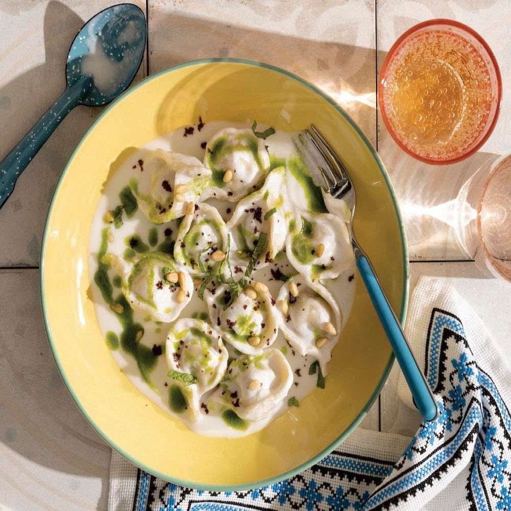

Joshpara
Sheshbark is a delicious Levantine recipe that has its origins in Turkish cuisine. Since the word Sheshbark is a Turkish word that means closed dough, Sheshbark is prepared in many Arab and international kitchens because of its great popularity.
